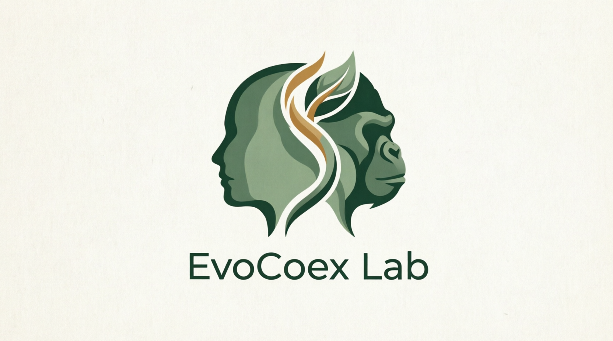

Welcome to EvoCoex Lab
We're currently building this website. Please check again soon!

Raquel F. Pereira Costa, PhD
Program-Specific Assistant Professor
Graduate School of Education and Human Development
Nagoya University